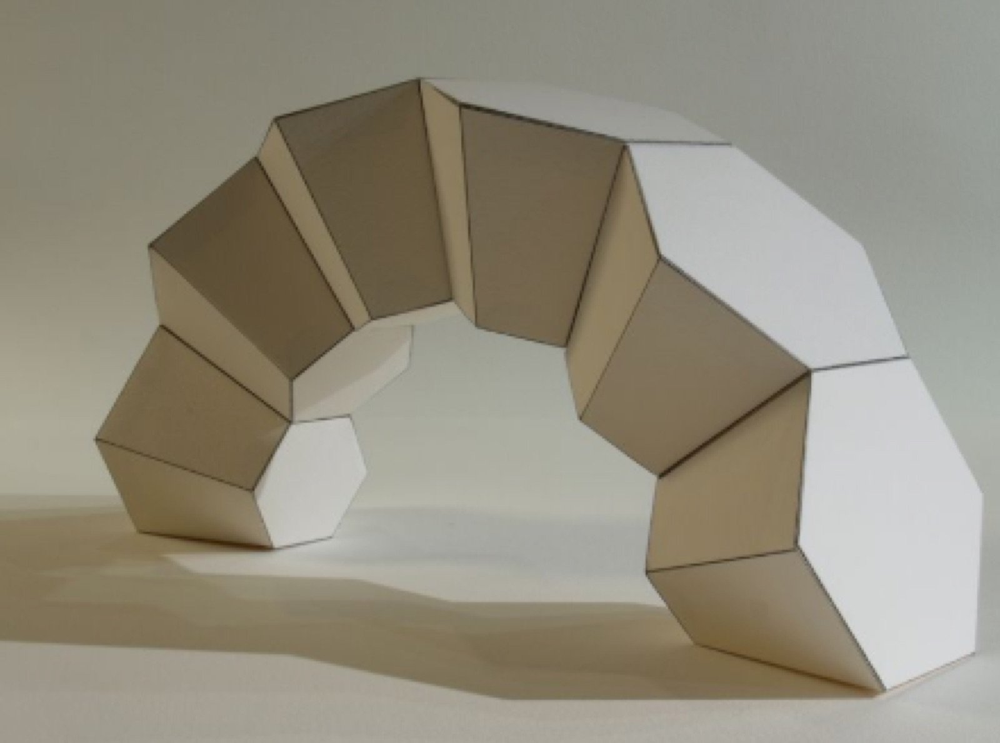
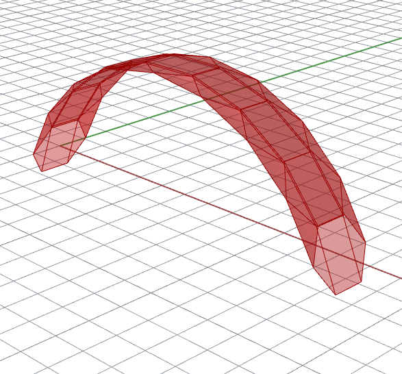
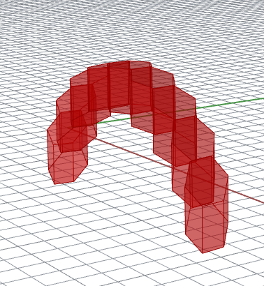
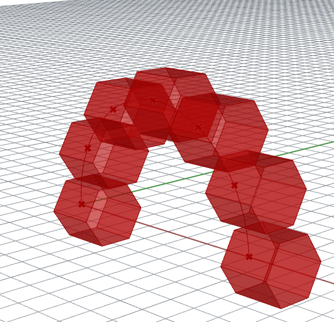
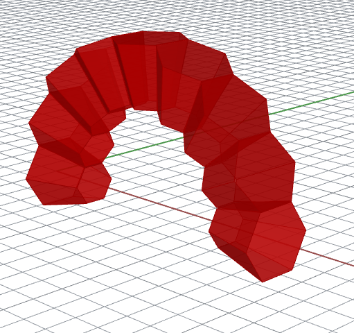
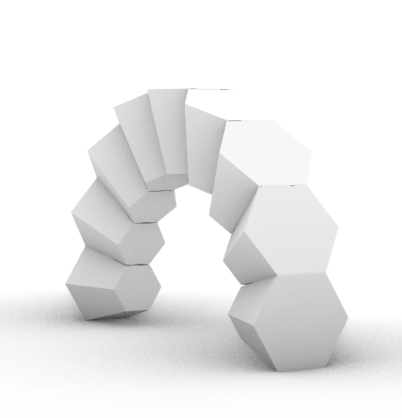
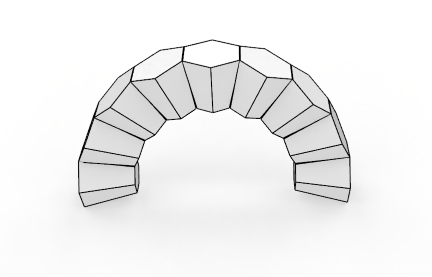
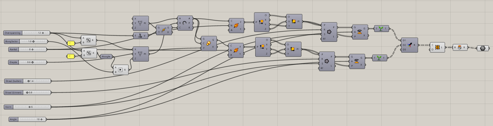

Project
Parametrische overspanning
Mijn eigen ontwerp voor een overspanning van kleiblokken, parametrisch gemaakt in Grasshopper voor project 2 (digitale fabricage).

De opgave
Onze opdracht was om een overspanning te ontwerpen met blokken van klei. Deze blokken worden geprint met kleiprinters en daarna samengesteld door de cobot. Onze groep van zes was opgesplitst: drie mensen werkten aan de cobot en drie aan de printer. Ik zat in de printergroep.
Iedereen maakte eerst een eigen concept. Ik bouwde een eigen model na op basis van een referentie, met mijn Grasshopper-vaardigheden van de leerplek. Ik wilde mezelf uitdagen: de vorm is simpel, maar heeft toch zijn uitdagingen.
Het proces
Pas na veel pogingen kwam ik in de buurt van de referentie. Ik wist niet welke components het handigst waren, dus ik heb getest en uitgeprobeerd met verschillende components, want dit kan op meerdere manieren. Hieronder staan de pogingen, het eindmodel en de feedback.
Werk in detail
Referentie
Ik bouwde mijn model na op basis van deze referentie: een boog van veelhoekige blokken. De vorm is simpel, maar heeft toch zijn uitdagingen.

Pogingen
Een loft gaf één doorlopend vlak, dus ik stapte over op extrude en daarna op een amplitude-component om de uiteinden goed te richten. Met feedback van K. Afshar (de onderkant is kleiner dan de bovenkant) en twee stralen kwam ik tot het eindmodel.




Eindmodel en Grasshopper-script
4 november 2026
Dit is mijn uiteindelijke model, gebakt en gerenderd. Hierbij zie je ook het Grasshopper-script dat ik heb gebruikt, met sliders voor onder andere de overspanning, de boogfactor, het aantal blokken, de dikte en de stralen.



Feedback en keuze
Een groepslid en mijn begeleider vonden mijn ontwerp niet helemaal parametrisch; de sliders van de twee stralen koppelen zou helpen. De groep koos een ander ontwerp, omdat het mijne lastig te printen was en voor de cobot.
Het resultaat
Vergeleken met waar ik begon is dit een grote vooruitgang. Ik heb geleerd vormen te maken in Grasshopper en curves te roteren.
Er was twijfel tussen mijn model en dat van een groepslid. We kozen het model van het groepslid, omdat het mijne ingewikkeld was om te printen en voor de cobot. Ik heb geleerd om bij het ontwerpen rekening te houden met printen en de cobot.